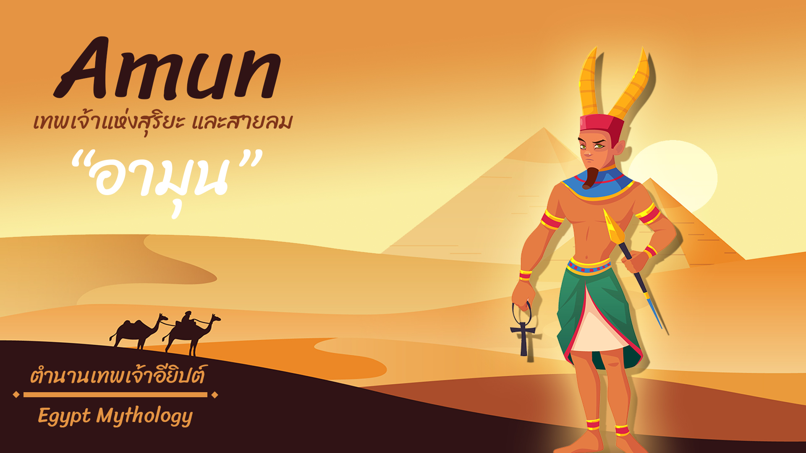

อามุนนั้นเป็นราชันแห่งทวยเทพ เทพอามุนนั้นถูกเรียกหลายๆชื่อ ทั้ง Amon Ammon Amen Aten โดยเทพอามุนนั้นเป็นสุริยเทพและเทพแห่งสายลมเทพอามุนนั้นเป็นเทพองค์สำคัญของชาวอียิปต์โบราณเป็นผู้ทำให้เมืองธีปส์มีชื่อเสียง
ในช่วงเริ่มต้นสร้างอาณาจักรใหม่มีรูปร่างเป็นบุรุษเพศศีรษะเป็นแกะดำประดับขนนก บริเวณศีรษะและแผงคอโดยแกะนั้นเป็นสัญลักษณ์ของความอุดมสมบรูณ์ซึ่งเป็นหน้าที่ของเขาในฐานะของอามุน-มิน (Amun-Min)โดยคำว่าอามุนนั้นหมายถึงผู้ซ่อนกาย เร้นกาย
รูปร่างอันลึกลับแตกต่างจากเทพอียิปต์องค์อื่นๆซึ่งเทพอามุนนั้นกล่าวว่าเป็นผู้สร้างทุกสิ่ง

เทพอามุน นั้นถูกกล่าวถึงครั้งแรกด้วยข้อความฮีโรกริฟ(อักษรภาพ)บนกำแพงพิรามิด(ปีที่ 2400-2300 ก่อนคริสตศักราช)ซึ่งเทพอามุนนั้นปรากฏตัวพร้อมกับมเหสีนามอามุนเนทในครั้งนั้นยังมีเทพแห่งสงครามนาม Montu (มอนทู)และเทพผู้สร้างนาม Atum (อาทุมก็คือชื่อเก่าของเทพราห์นั้นเอง)โดยเทพมอนทูเป็นนักรบผู้ปกป้องเมืองและช่วยเหลือในการขยายอนาเขต

ในขณะที่ เทพอาทุมนั้นมีพลังมหาศาลเป็นเทพที่เกิดจากแม่น้ำแห่งความวุ่นวายซึ่งเทพอามุนเป็นผู้ปกป้องเป็นเทพประจำเมืองธีปส์ หน้าที่ของอามุนนั้นคือการสร้างความอุดมสมบรูณ์เคียงคู่กับมเหสีอามุนเนทซึ่งเทพอามุน
เทวีอามุนเนท มอนทู และ อาทุมเป็นหนึ่งในแปดเทพเป็นตัวแทนแห่งการสรรค์สร้างเทพอามุนนั้นอาจดูไม่มีพลังเมื่อเทียบกับเทพอื่นใน 8 เทพ
แต่เทพอามุนนั้นเป็นตัวแทนแห่งความลึกลับความสับสนในขณะที่เทพองค์อื่นๆจะมีพลังที่ดูเด่นชัดมากกว่าอย่างเช่นความมืด น้ำ หรือ ไร้ที่สิ้นสุดซึ่งตัวตนของเทพอามุนนั้นค่อนข้างคลุมเครือเพราะพลังของอามุนนั้นมักขัดแย้งกันเสมอและเพราะความลึกลับคือธรรมชาติของเทพอามุนนั่นจึงเป็นเหตุที่ทำให้เทพอามุนนั้นสามารถเป็นทุกสิ่งทุกอย่างได้และนี่คือพลังที่แท้จริงของเทพอามุน